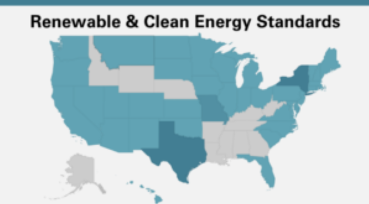

An open-source data processing pipeline called Public Utility Data Liberation (PUDL) makes US energy data more accessible. The US government and other public entities provide them with an availability of material regarding the energy production. The main objective of the problem is to analyze data (EIA-923) from the Public Utility Data Liberation (PUDL) project, which contains all the information about the types of materials (coal, natural gas, and petroleum) used to produce electricity in relation to the quantity of heat that results in environmental pollution, and to provide recommendations based on the findings regarding power generation in the USA.


Telecom companies face the challenge of churn, prioritizing retention over acquisition due to its difficulty. Customer churn modeling, crucial for revenue sustainability, utilizes data mining to identify potential defectors. Employing predictive models like decision tree classifiers aids in predicting and incentivizing at-risk clients to prevent service provider transitions.

Perform KNN analysis on the artificial make_blobs dataset, following a four-step procedure: importing libraries, splitting the data, conducting KNN analysis on the split data, and finally, reporting accuracy scores. This structured approach ensures systematic exploration of the dataset and evaluation of the KNN model's performance.
To enhance performance, adjust the IMDB neural network model by incorporating techniques such as adding additional layers, tuning hyperparameters, or using regularization methods. These modifications can affect performance by improving model capacity, reducing overfitting, and enhancing generalization ability. The steps involved include importing libraries and the IMDB dataset, data preparation, model construction, validation, result visualization, and retraining for predictions on new data.

This project aims to employ convnets in computer vision to classify images accurately, showcasing how these techniques enable computers to process visual information akin to humans. Through methods like training from scratch or utilizing pre-trained convnets, the report explores the effectiveness in classifying images, like distinguishing between cats and dogs. Given smaller datasets, precautions against overfitting are crucial, necessitating strategies such as data augmentation and dropout layers, alongside evaluation on validation and test sets to ensure model performance.
The simulation aims to enhance the Subway ticket queuing system, addressing long queues and passenger dissatisfaction. By employing discrete event simulation, alternative scenarios are explored to optimize the queuing system and improve efficiency. Insights from the simulation results guide decision-making for streamlining ticketing processes and improving passenger experience in the Subway.
Portage County Pets demographics reveal a diverse range of companion animals, with dogs and cats being the most prevalent. The county boasts a significant number of households that own pets, reflecting a community with a strong affinity for animal companionship. Additionally, there's a growing trend towards adopting pets from shelters and rescues, indicating a compassionate approach to animal welfare within the county.